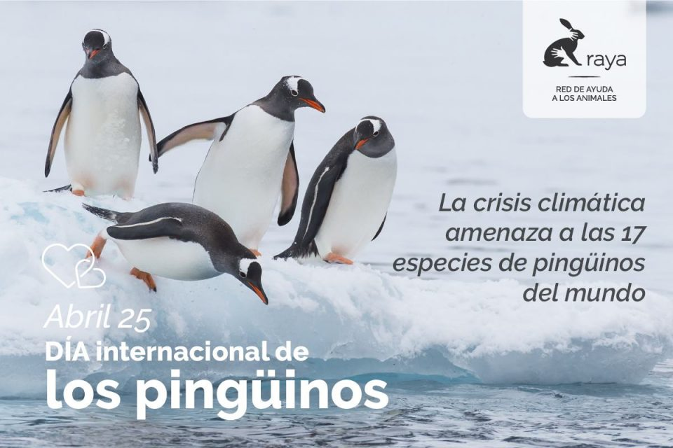
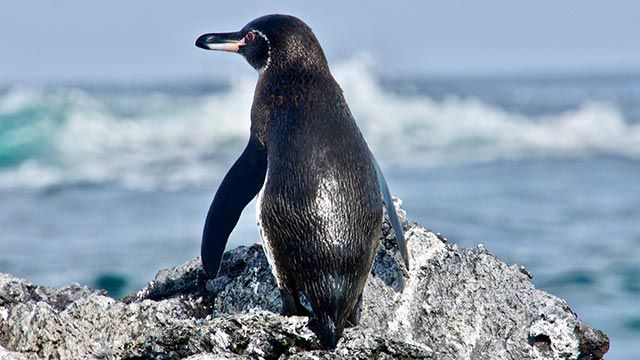
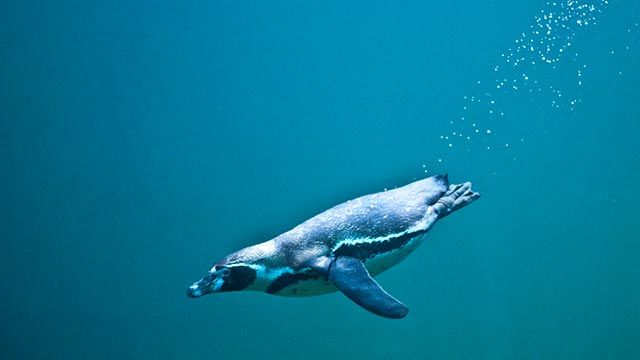
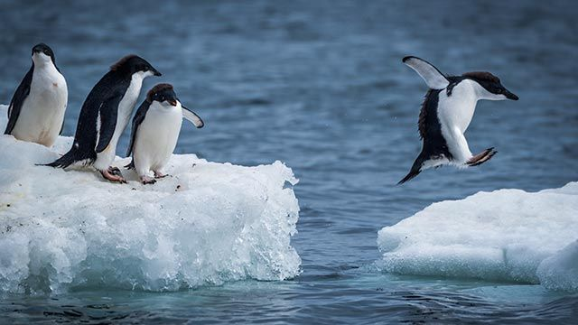
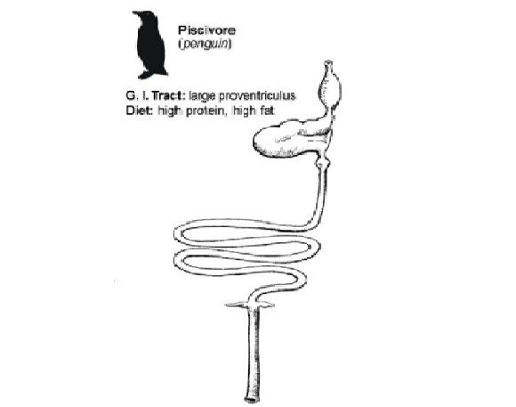

En esta página voy a poner una serie de curiosidades sobre estos animales, seguro que la mayoría de curiosidades NO las conoces.
Efectivamente, estos animales tienen sus día especial, pero para ser exactos tienen dos días y estos
son el 20 de enero y 25 de abril. Estos días con la intención de aumentar la conciencia sobre su preservación, protección y cuidado.

Durante el transcurso evolutivo hace millones de años los pingüinos perdieron la capacidad de volar para poder mejorar su eficacia de nado ya que las aletas eran incompatibles con el vuelo.
Su dieta sólo se basa en peces, calamares y crustáceos como el krill (típico de la zona del
Antártico y con un gran parecido a la gamba).
Además, aunque parezca que tienen una piel aterciopelada, en realidad su cuerpo está compuesto de plumas al
igual que cualquier otra ave. Un aspecto curioso es que las crías tienen un plumaje suave y cálido de color marrón
que les protege del frío durante su primer año de vida.
Concretamente la especie de Spheniscus mendiculus que ha conseguido habitar en las islas Galápagos del océano pacífico.
De ahí a que se le conozca como el pingüino de Galápagos. Pero no ha sido fácil para él ya que ha tenido que desarrollar
diversas adaptaciones evolutivas para vivir con el sol del ecuador.
Por ejemplo, conseguir una piel que pueda estar expuesta a la pérdida de calor y mudar las plumas dos veces al año para
reemplazar las que hayan sido dañadas por el sol. Algo bueno es que nunca dejan de buscar la sombra durante las horas más
calurosas del día.

La velocidad media de los pingüinos en el agua suele rondar entre 4 y 10 kilómetros por hora. No obstante, hay tramos en
los que pueden duplicar y triplicar su velocidad sacando el aire atrapado entre sus plumas en forma de burbujitas.

A la hora de salir del agua pueden propulsarse con un salto hasta llegar a los dos metros de altura. Además, suelen
ser muy rápidos saltando, cosa que les permite escapar de depredadores como las focas leopardo.

Normalmente, los pingüinos suelen medir hasta 1,10 metros y pesar 40 kilos aproximadamente. Y la especie más grande del mundo es el
pingüino emperadorq ue suele llegar hasta los 1’15 metros.
No obstante, expertos científicos encontraron los restos de un pingüino que llegó a medir hasta 1’60 metros y pesó 80 kg. Por lo que
no se descarta que alguna de las especies pueda llegar a medir más de la media común.
En cambio, la especie más pequeña es el pingüino azul que a penas llega a los 40 centímetros y sólo pesa 1 kilo.
Sistema digestivo del pingüino (adaptado de Stevens & Hume (1995) por McClements (2007)).
